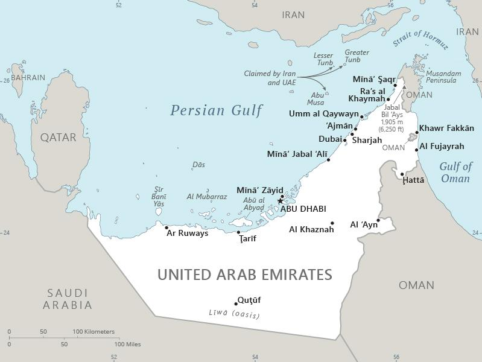

Genel Bilgiler
Birleşik Arap Emirlikleri (BAE), Arap Yarımadası’nın doğusunda yer alan federal bir monarşidir. Başkenti Abu Dabi’dir. Yaklaşık 10 milyon nüfusa sahiptir. Resmî dili Arapça’dır ve para birimi Birleşik Arap Emirlikleri Dirhemi (AED)’dir. BAE, petrol ve doğal gaz rezervleri ile ekonomik açıdan güçlü bir ülkedir ve turizm, finans ve ticaret alanlarında da öne çıkar.
BAE, kuzeyde Basra Körfezi, doğuda Umman ve Suudi Arabistan ile çevrilidir. Yüzölçümü yaklaşık 83.600 km²’dir. Ülke coğrafyası çoğunlukla çöl ve kıyı ovalarından oluşur. Önemli şehirleri Abu Dabi, Dubai, Şarja, Ajman, Umm el-Kayveyn, Ras el-Hayme ve Feylika’dır.
Başkent: Abu Dabi
Kıta: Orta Doğu ve Kuzey Afrika
Yüzölçümü: 83.600 km²
Nüfus (2025): 9.9 milyon
Bayrak Anlamı: BAE bayrağı dört renkten oluşur: kırmızı, yeşil, beyaz ve siyah. Kırmızı cesareti ve fedakârlığı, yeşil refahı ve doğayı, beyaz barışı ve saflığı, siyah ise güç ve bağımsızlığı simgeler. Bayrak 1971 yılında, ülkenin kuruluşuyla birlikte kabul edilmiştir.
Birleşik Arap Emirlikleri Haritası
Ekonomi
BAE ekonomisi petrol ve doğal gaz ihracatına dayalıdır; enerji sektörü temel gelir kaynağıdır. Sanayi sektöründe petrokimya, inşaat ve havacılık öne çıkar. Hizmet sektörü finans, turizm, lojistik ve ticaret alanlarında güçlüdür. Dubai ve Abu Dabi, BAE’nin küresel iş ve finans merkezleri olarak öne çıkar. Ülke, yenilenebilir enerji ve altyapı yatırımlarıyla bölgesel lider konumundadır.
| Yıl | İhracat (Milyar $) | İthalat (Milyar $) |
|---|---|---|
| 2019 | 290 | 160 |
| 2020 | 260 | 120 |
| 2021 | 320 | 180 |
| 2022 | 350 | 200 |
| 2023 | 360 | 210 |